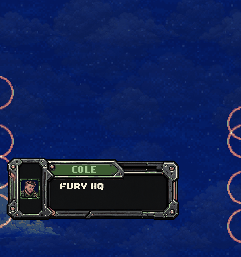
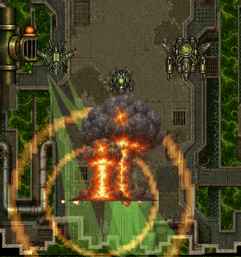
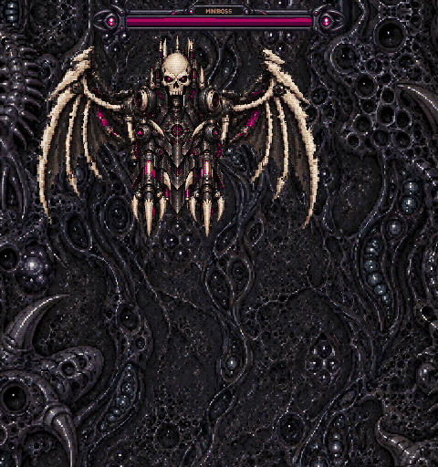

Stage 6

Alternating Dasher crossings, turbo wakes, warned flyby fire and native explosions.
Native game captures. New PixelLab fleet, toxic effects and Herald module animation. These clips demonstrate individual encounters.

Alternating Dasher crossings, turbo wakes, warned flyby fire and native explosions.

Toxic jet, scout and relay gunship with charge, recoil, drift and evasive motion.

Original modular Herald: animated wings/head, committed swoop and recovery.